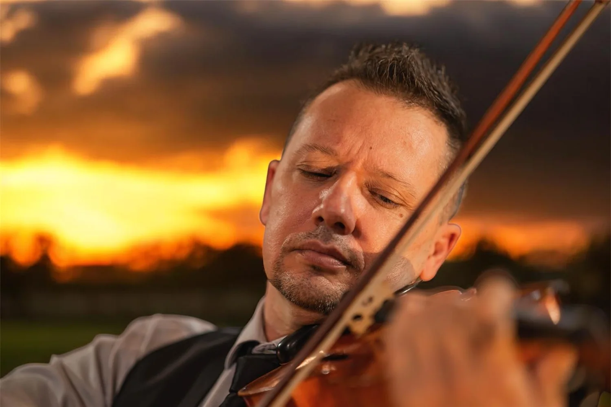
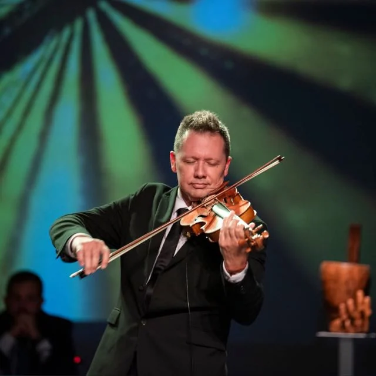

Coming up
About


Violin teacher at the Adeje municipal school of music
Teaching
Lessons are adapted to each student's level, always emphasising the importance of a good sound and good intonation. The pieces studied are mostly classical, though contemporary works can be taken on too.